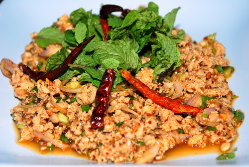
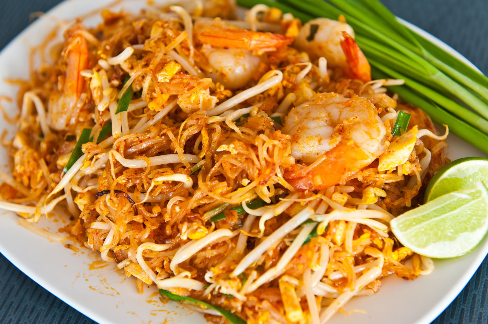
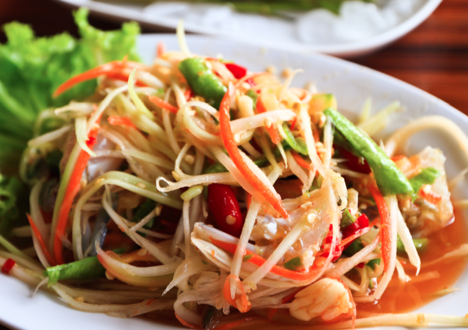
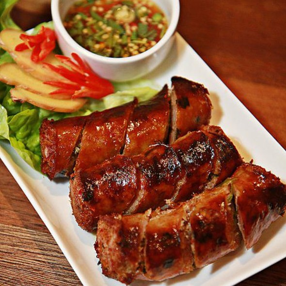
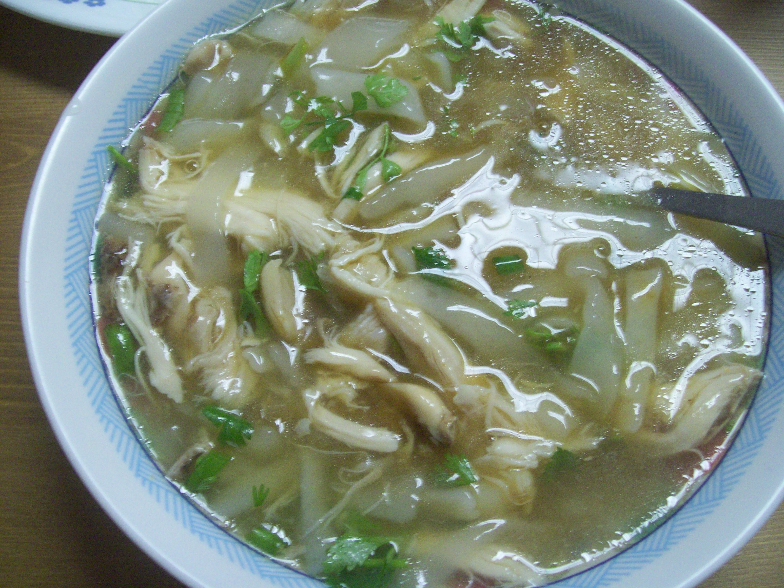
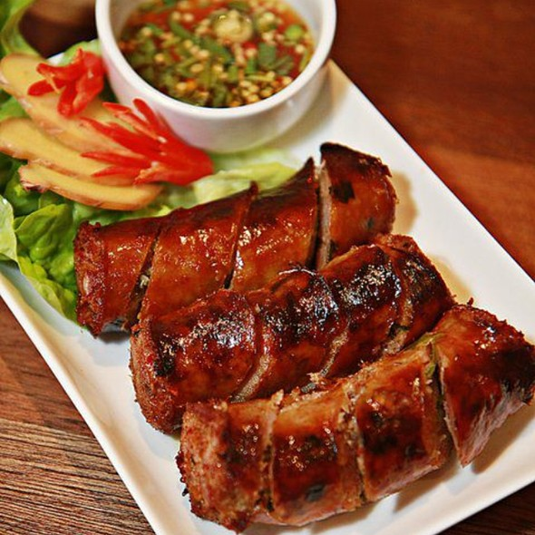
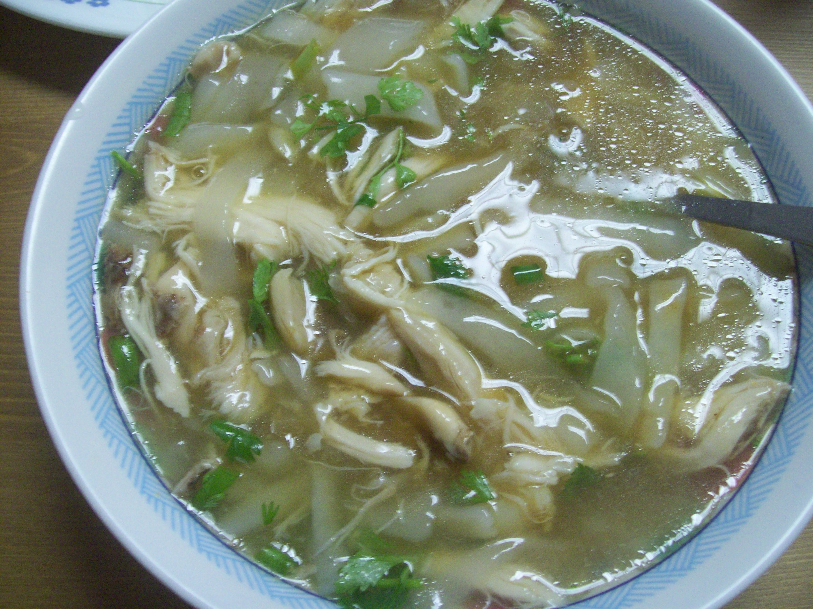

I love Thai food! You can never go wrong with Thai food. I love how they use so many varieties of herbs and spices in their cooking to bring out the flavors. Here are some pictures of my personal favorites.
Can you guess the names of these dish?
You should try some of these food if you haven't already.



Laos Food!!!
Laos food is similar to Thai food. They also have papaya salad, larb, etc. Its the same dish but they just add different ingredients to it. Sometimes it's hard to even differentiate between the two. Here are some Laos food that I enjoy eating.

 


